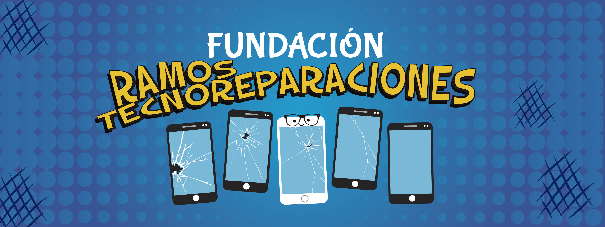

Por favor seleccione el equipo que desea repararSeleccione la marca: {{marca.descripcion}}Seleccione su equipo:{{equipo.descripcion}}Por favor seleccione alguna reparacion disponibleSeleccione el tipo de reparacion:{{(reparacion.reparacionRef
| doc | async)?.descripcion}}
Importe estimado de reparacion: ${{(rep | async)?.valor}}